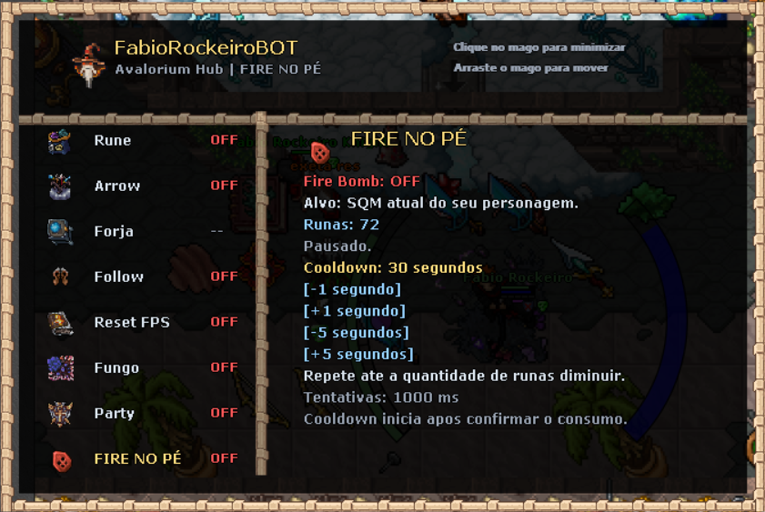
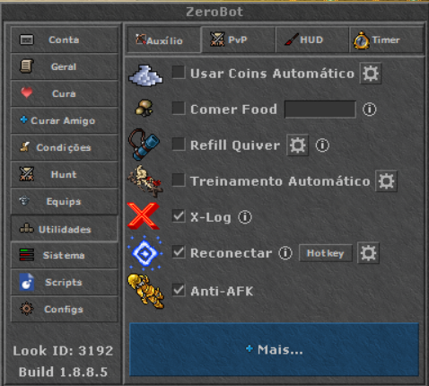
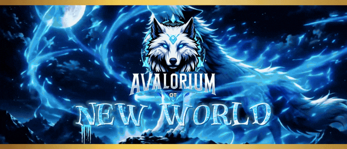

FABIO ROCKEIRO - SCRIPTS e DOWNLOADS
FabioRockeiroBOT
Runas, flechas, forja e apoio para sua hunt em um único painel. Clique no mago para minimizar o menu ou arraste-o para mover pela tela.
Arquivo Lua · 176 KB · Uso exclusivo no ZeroBot
O que cada função faz
- Rune
- Compra runas automaticamente usando o Rune Portable. Selecione a runa e configure o reabastecimento no painel.
- Arrow
- Compra automaticamente a flecha selecionada e abastece diretamente o quiver.
- Forja
- Automatiza a geração de Slivers e Exalted Core e o aumento do nível máximo de Dust. Ative as opções desejadas no menu.
- Follow
- Configura o tipo de Follow que você quer usar para seguir um personagem.
- Reset FPS
- Reconecta o personagem para resetar o FPS e aliviar a lentidão em telas pesadas depois de horas de hunt. Requer X-Log e Reconectar selecionados no ZeroBot. Antes da ação, prepara a proteção conforme a vocação: Utamo Vita para MS/ED, Energy Ring para RP/MK ou Utamo Tempo para EK, ajudando a evitar mortes durante o processo.
- Fungo
- Automatiza o movimento para pisar nos fungos durante a hunt de Gnoprona.
- Party
- Automatiza os convites do líder para os personagens da lista de players criada no painel.
- Fire no Pé
- Usa Fire Bomb no SQM atual do personagem. Clique na última opção do menu para ativar ou desativar e ajuste o cooldown no painel com os botões de ±1 ou ±5 segundos. O intervalo padrão é de 30 segundos e só começa quando a contagem de runas diminui; enquanto isso, repete a tentativa a cada segundo.
Configuração do ZeroBot para Reset FPS
No ZeroBot, deixe X-Log e Reconectar selecionados antes de ativar o Reset FPS no script.

Como instalar no ZeroBot
- Baixe o arquivo FabioRockeiroBOT.lua pelo botão acima.
- Coloque o arquivo na pasta
Documentos/ZeroBot/Scripts. - Dentro de
Scripts, crie uma pasta chamadaFabioUI, caso ela ainda não exista. Ela é usada para salvar as preferências do painel. - Abra o ZeroBot, vá ao menu Scripts, selecione FabioRockeiroBOT.lua e clique em Carregar. Se ele não aparecer, clique em Recarregar e confira a pasta onde salvou o arquivo.
- Use somente este arquivo para carregar o hub e configure as funções desejadas. Para o Reset FPS, deixe X-Log e Reconectar selecionados no ZeroBot, como na imagem de configuração do Reset FPS.
Os módulos já estão reunidos neste Lua: não é necessário importar outros scripts do Fabio Rockeiro. Mantenha a pasta core da instalação do ZeroBot, que fornece as bibliotecas usadas pelo script. O arquivo de preferências é salvo pelo próprio painel na pasta FabioUI.

PARA SUA TRANSMISSÃO
GIF para live da Twitch

{kind=link}